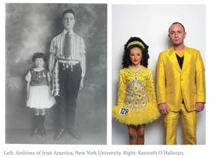
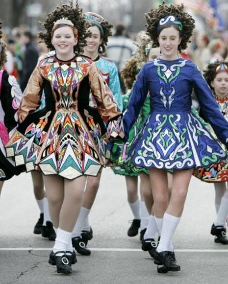
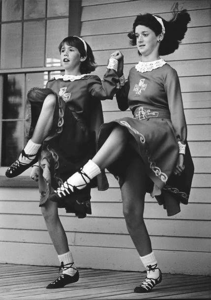
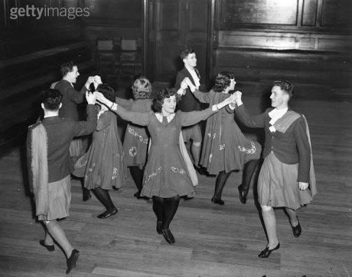
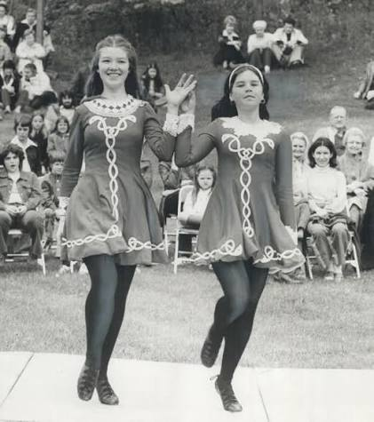

<!DOCTYPE html>
<html lang="en">
    <head>
        <meta charset="UTF-8">
        <link rel ="stylesheet" href="irish.css">
        <meta name = "viewport" content="width=device-width, initial-scale=1">
        <title>Irish Dance Explained</title>

        <script async src="https://www.googletagmanager.com/gtag/js?id=G-XXXXXXXXXX"></script>
        <script>
            window.dataLayer = window.dataLayer || [];
            function gtag(){dataLayer.push(arguments);}
            gtag('js', new Date());
            gtag('config', 'G-XXXXXXXXXX');
        </script>
        
        </head>
</html>

<header>
    <h1>Irish Dance Explained</h1>
</header>

<br>

<nav>
    <a href ="index.html">Home</a>
    <a href="past.html">Past</a>
    <a href = "present.html">Present</a>
    <a href = "dancers.html">Dancers</a>
    <a href="contact.html">Contact</a>
</nav>

<main>

<h2 class ="present-title"> Irish Dancing of the Present</h2>

<div class="present-image-row">
 
 
 </div>

<p>After the Gaelic League and the emergence of CLRG (a governing body of Irish Dance that sets rules, regulations, and standards for the sport), Irish Dancing continued to develop, change, and grow. What was once a local tradition of expressing irish culture in times of british occupation, has become a global phenomenon.</p>
 
<br>

<h3 class="movingaway"> Moving Away from the Gaelic League</h3>
<p class="movingaway">As Irish dancing continued to develop and change after the creation of CLRG, we saw a movement towards more formal competitions and showcases. Dancers who would once dance outside on doors taken off of their hinges, would now dance in halls and buildings with wool dresses decorated with celtic embrodiery, and have their hair styled with bows and handbands.</p>

<div class="present-image-row">
    
   
   
</div>

<br>

<h3>Irish Dance in the 1960's</h3>
<p> The spread of Irish Dancing throughout the world, eventually led to the creation of the first World Championships (Oireachtas Rince na Cruinee) in 1970. With the first world championships being created and held, it had shown individuals across the globe how far Irish Dancing truly has spread. Ideas were once shared around individuals living in little towns, has now become a global phenomenon. </p>
<p>In America, the dresses of this time reflected the relaxed nature of the era. It often involved home made costumes that were more comfortable to wear, reflecting the styles of everyday wear.</p>

<h3>Riverdance</h3>
<p>The largest expansion of Irish Dancing to the greater world, was with Riverdance. Riverdance first started during a participation during the 1994 Eurovision Song Contest. Jean Butler and Michael Flatley choreographed a seven minute number to the nusic performed by the vocal ensemble Anuna. The performance did so well, that both Flatley, Doherty, and McColgan created a full two hour show. </p>
<p> The style of Irish Dance performed in Riverdance productions involved more movement of the arms and upper body, as well as footwork that was incredibily detailed and fast. Performances had a theatrical aspect to them, that had a modern edge that was not typical of Irish Dancing culture so far. </p>
<p> In the year of 2026, Riverdance conttinues to bea major aspect of sharing Irish Dance culture around the world. The production has been to over 450 cities, and has led to the emergence of many similar groups traveling around the world.</p>

<h3>Early 2000's </h3>
<p>Due to Riverdance, the wolrd of Irish Dance was forever changed. Riverdance had displayed a sense of athleticism, intricate footwork, and theatricallity that made its way into competitive Irish Dance. Dancers had soon begun to fly through the air, perform gravity defying tricks, and demonstrate intricate skill. What was once a niche art form performed at religious rituals, was now an art form that required the same amount of athleticism as top olympic atheletes. </p>
<p> The fashion of Irish Dance costumes from the early 2000's reflected mainstream early 2000's fashion trends. Dresses that were once made of heavy wool material, were now made of lighter materials such as velvet, satin, and cotton. There was a heavy focus on bright colors such as neon, animal print, and gem tones. </p>

<h3>Current Irish Dance</h3>
<p>Irish dancing of today, involves techniques that can be seen in ballet such as tricks that involve needing to be on pointe,split jumps, and high kicks. The athleticism that emerged in the early 2000's is still very much present. Today that athleticism is credited to cross-training, which has become more and more common. The dancers of today take part in outside acitvities such as yoga, weight training, running and other activites that focus on improving endurance and strength.</p>
<p>For the costumes of today, costumes covered in crystals are quite commn. Costumes are decorated with sequins and swarovski crystals beautifully, as well as asymmetrical designs such as swooping necklines. To add to this stage presence, many dancers often wear dramatic capes and shawls. </p>

<div class="video-link-card">
    <p>With this video, we have an example of what Irish Dancing currently looks like today. We have individuals showcasing their hardshoes irish dancing skills. </p>
    <br>
    <a href="https://pixabay.com/videos/river-dance-girl-irish-public-33977/" target="_blank" rel="noopener noreferrer" class="video-link-button">
        Video Link
    </a>
</div>


<footer class = "site-footer">
    <div class ="footer-container">

    <p> Copyright Irish Dance Explained 2026</p>

    <nav class ="footer-links">
        <span class = "footer-link">sophiecolumbine8@gmail.com</span>
        <a href = "contact.html" class = "footer-link">Contact</a>
    </nav>  
</main>
</div>
</footer>
